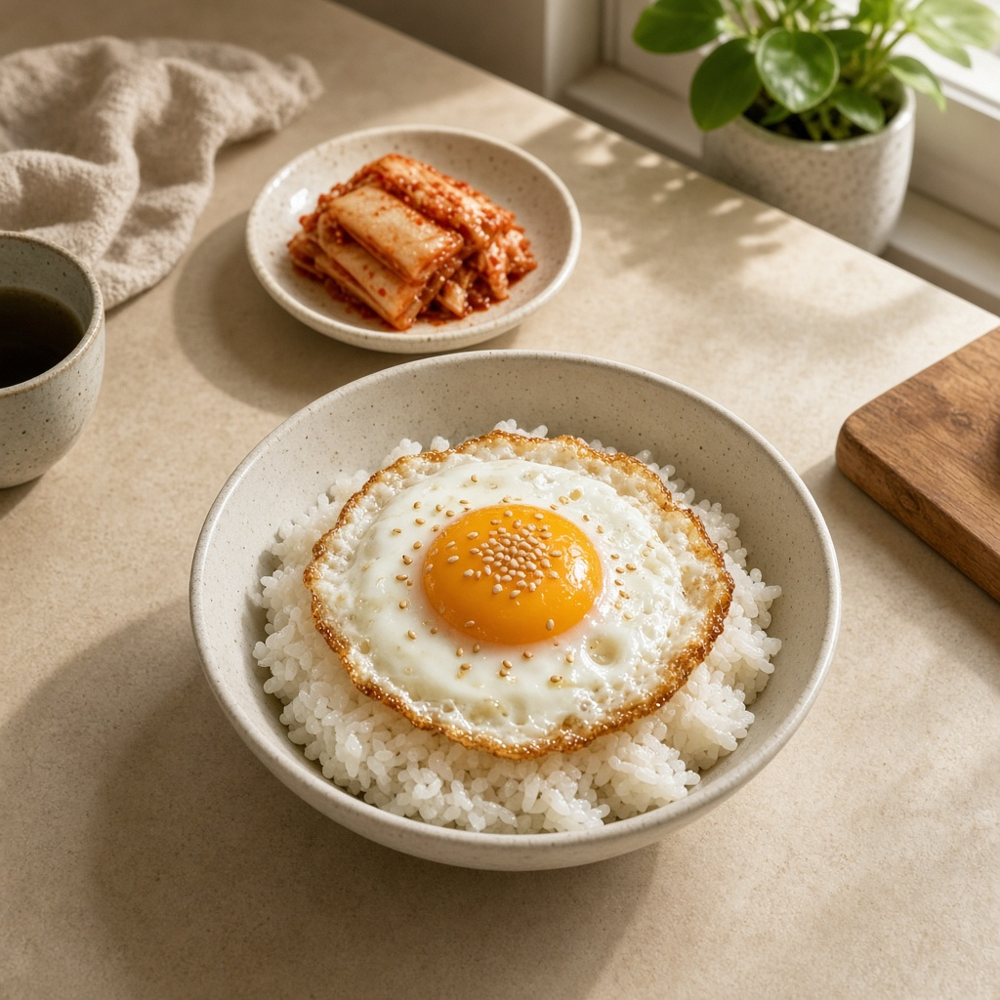
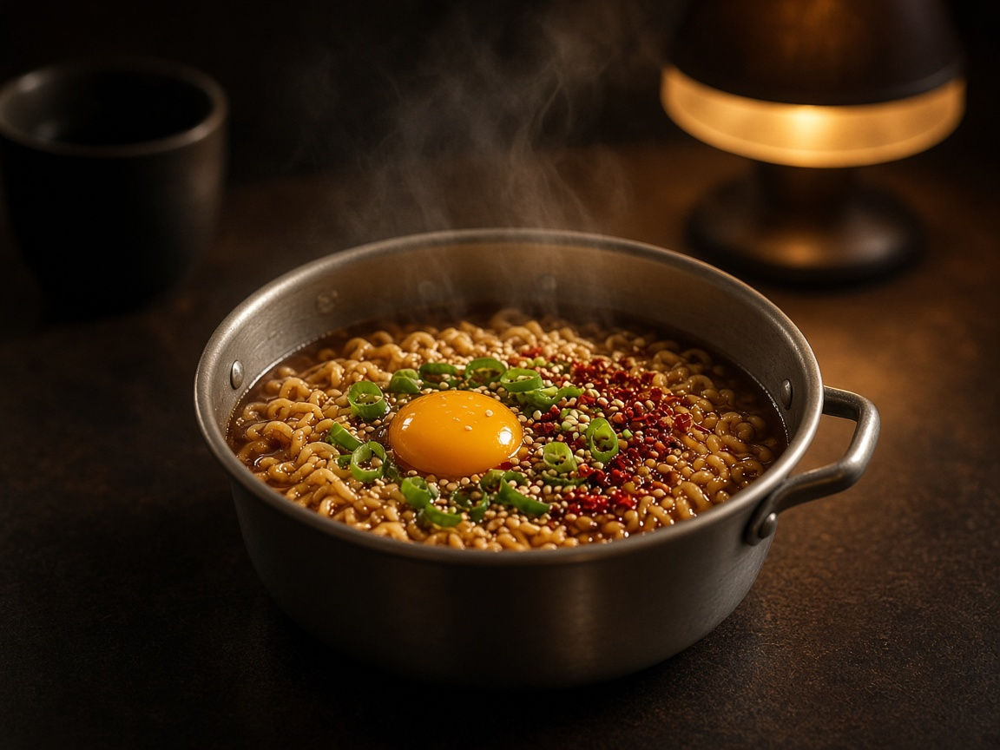
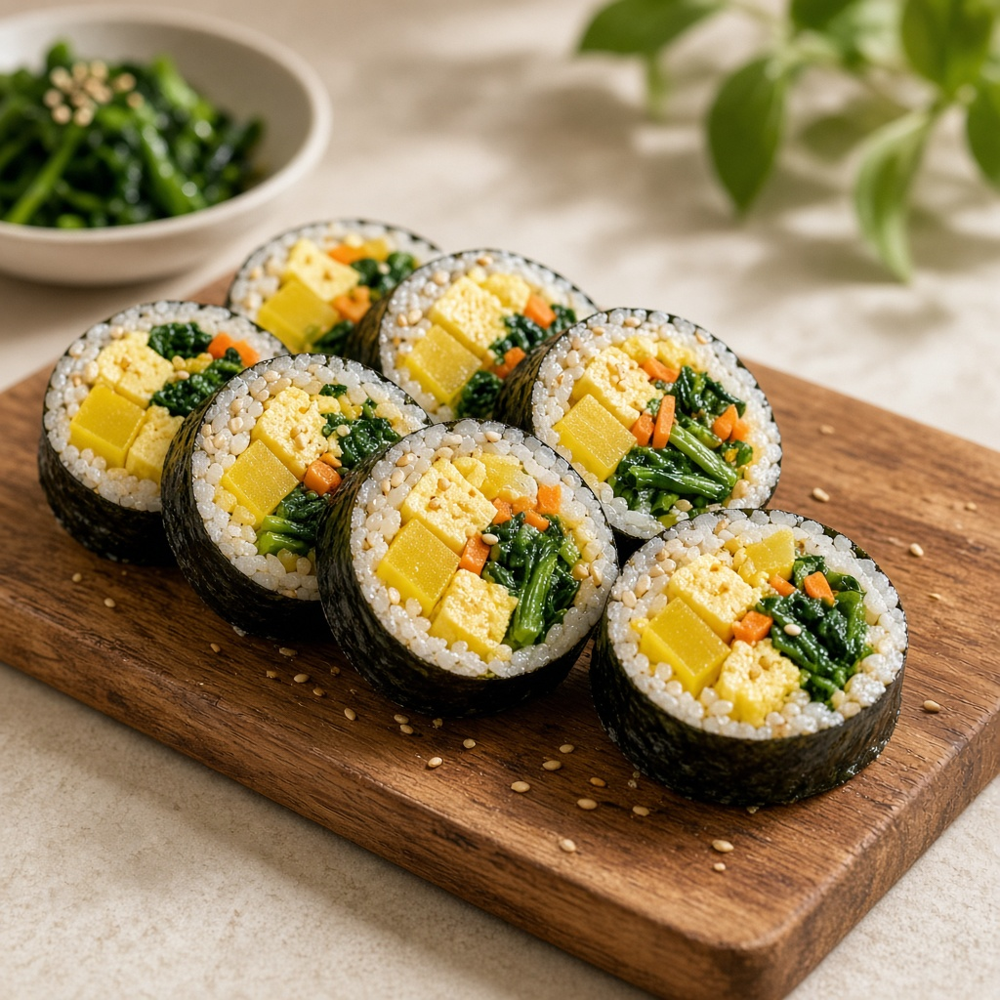
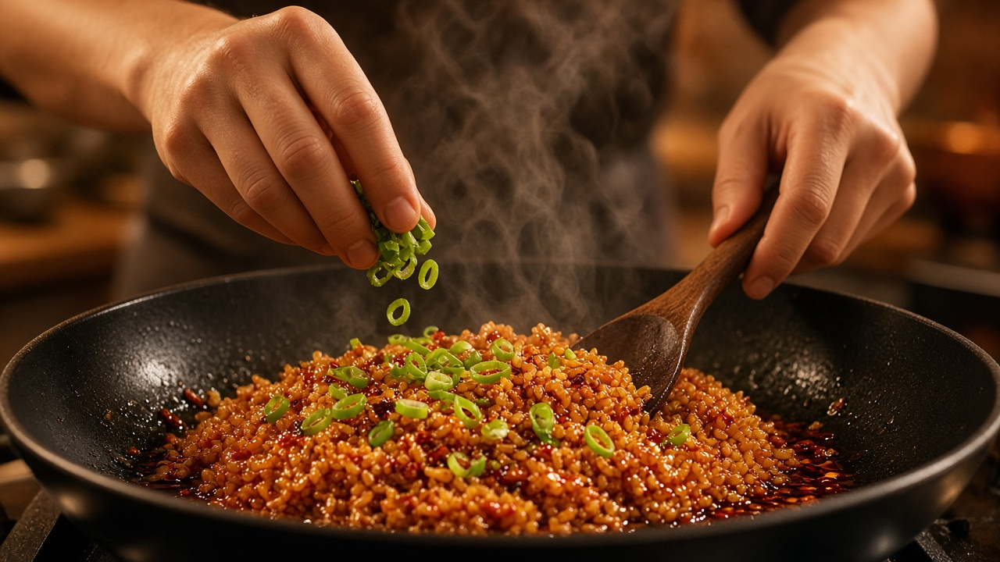

인스타그램과 맛집 지도로 레시피·일상을 만나 보세요. 아래 링크에서 바로 이동할 수 있어요.
KAIST FOOD & COMMUNITY
카이스트 기계과 먹방1티어 학생의 먹방일기
사진, 지도, 영상, 대화. 밥도둑이 모아 둔 길이다.



한 끼를 사진으로 남긴 기록.

영상은 준비 중. 곧 여기서 틀 수 있게.
카이스트 근처, 밥도둑이 찍어 둔 곳.
편하게 한 줄 남겨 주세요.